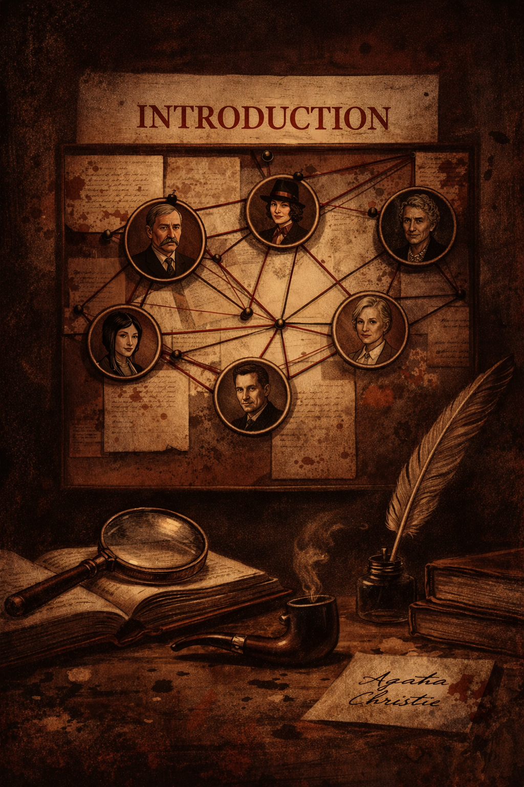

Agatha Christie's Archive

This project explores the intricate networks of characters in the detective novels of Agatha Christie, one of the most celebrated mystery writers of the 20th century. Using the techniques of Social Network Analysis (SNA), we visualize and quantify the relationships between characters, revealing patterns and structures that might otherwise remain hidden in the narrative.
SNA is a set of methods and tools used to study the relationships and interactions within a group of interconnected entities, known as nodes. In the context of literature, nodes typically represent characters, and edges represent interactions such as dialogue, shared scenes, or plot-driven connections. By applying SNA to novels, we can uncover the relative importance of characters, detect central figures, and identify subgroups or communities within the story.
Analyzing narrative structures through SNA not only provides a visual and quantitative understanding of the text, but also allows readers and researchers to examine the techniques and methods employed by authors. In detective fiction, these techniques often involve the careful placement of clues, the manipulation of character interactions, and the orchestration of plot twists. Mapping character networks helps reveal how the author distributes attention across protagonists, suspects, and supporting figures, and how the complexity of these connections contributes to suspense and narrative tension.
Dive into the network, explore the connections, answer quiz questions, earn achievements and discover how Agatha Christie creates stories that remain compelling and ingenious nearly a century later.

Edges (Relationships)
Line thickness indicates interaction strength and frequency.
🟠 Lighter color — weaker or occasional interaction
🟣 Darker color — stronger or recurring interaction
Nodes (Characters)
Node size reflects overall connectivity in the network.
Node color indicates narrative centrality (betweenness).
🟠 Lighter color — peripheral character with limited narrative mediation
🟣 Darker color — structurally central character connecting multiple groups